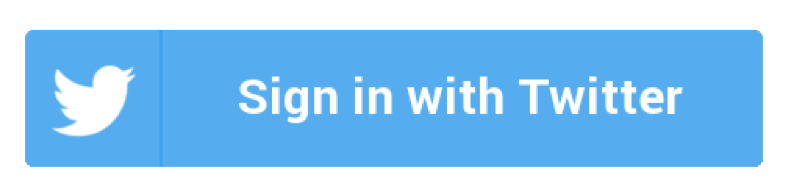

#Tweetsintinta
Quítale la tinta a tus tweets paradársela a los que se han quedado sin ella.
En España 1 de cada 3 niños viven en riesgo de pobreza infantil, entre otras muchas carencias, estos niños no pueden hacer frente a imprevistos como reponer material escolar.
¿Te imaginas quedarte sin tinta en tu bolígrafo y no poder comprarte otro?
Desde CaixaProInfancia queremos concienciar sobre este problema y ayudar a los niños que viven en esta situación.
Y queremos que tú formes parte de ello.
Así que por cada tweet sin tinta que publiques, donaremos un pack de material escolar a uno de estos niños.
Ademas
@ademas13
20.580
tweets sin tinta
tweets recientes
...